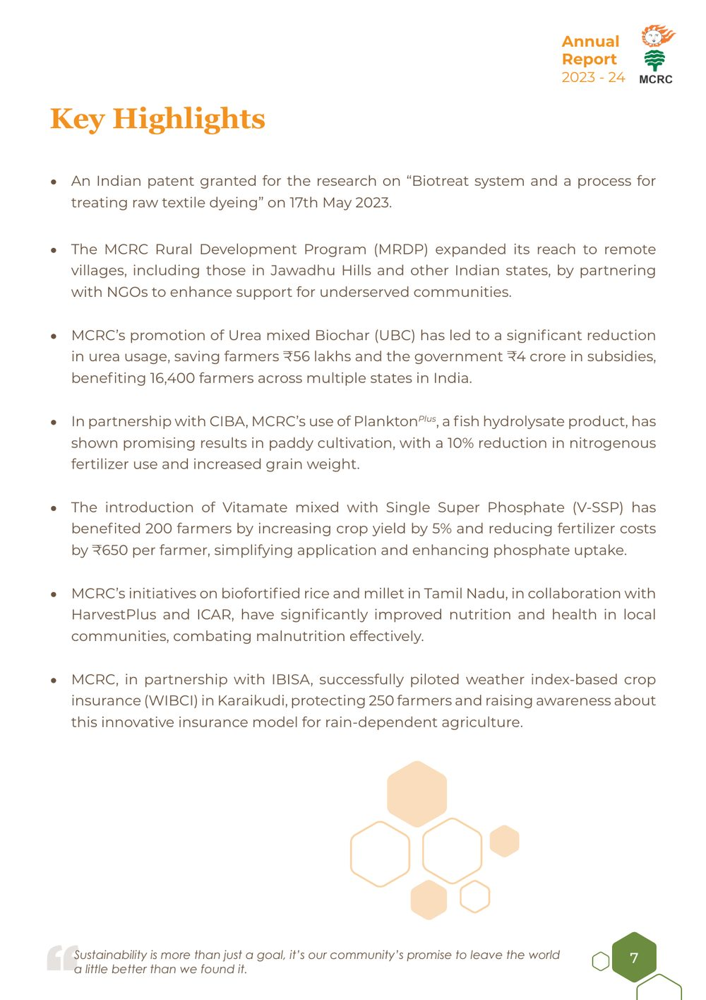
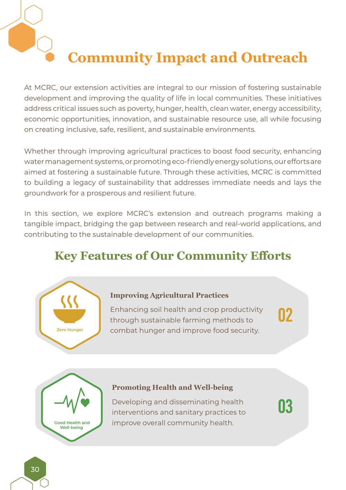
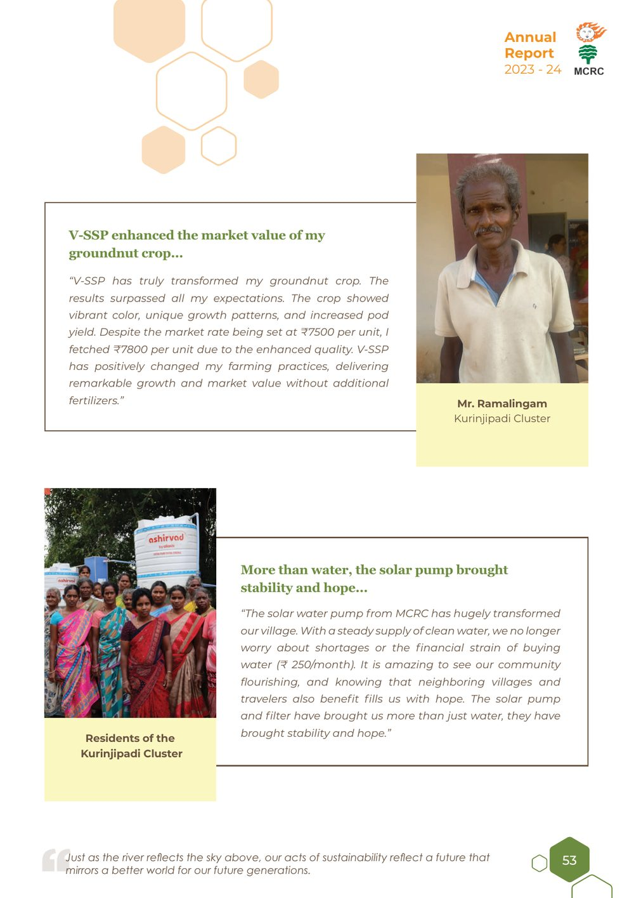

Long-form and editorial · 2 min read
Shaping the narrative arc of a research centre’s annual report
Panorbit MCRC Annual Report 2023–24

- Brief
- Present a year of research and community work to funders and the public
- Role
- Shaped the structure, then wrote and edited the report with MCRC’s scholars
- Scope
- Annual report covering 15 research and 13 outreach programs
- Timeframe
- 2023–24 report year
- Outcome
- Published as MCRC’s 2023–24 annual report
The brief
The Murugappa Chettiar Research Centre (MCRC) needed its 2023–24 Annual Report to cover a full year of work, from lab research to programs in villages, for readers ranging from funders to the communities themselves. That came with four challenges.
- A lot of ground to cover 15 research programs and 13 community outreach programs.
- Technical material Scientific research that had to make sense to non-specialists.
- Many authors Drafts from different scholars, each with their own style.
- Mixed audiences Funders, government bodies, researchers, and the public, all in one document.
What I did
- Shaped the structure. Built an eight-section arc that moves from research to community impact to the beneficiaries’ own voices.
- Framed it around the FAO's Four Betters. Opened with Better Production, Nutrition, Environment, and Life, giving 28 programs a shared lens.
- Worked with the scholars. Interviewed researchers to understand their work, then edited the research sections with them over several review rounds for a general reader.
- Set the tone. Brought many authors into one consistent voice, down to the reflective lines at the foot of each page.
- Wrote the connecting sections. The overview, highlights, and section introductions that guide readers through the report, and the beneficiary stories and milestones that close it with the people the work serves.
The work
Framing the report


Inside the report






Click any page to view it larger and browse the gallery.
The result
- 15research programs, explained for funders, partners, and the public.
- 13community outreach programs, told through their impact on the ground.
What I learned: Writing about research works best as a partnership. Interviewing MCRC’s scholars, asking questions, and reviewing each section together showed me that the strongest writing comes from understanding the work deeply, and that accuracy and accessibility grow from that same understanding.